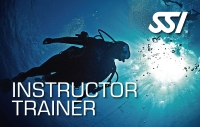

|
教練培訓官就是你能夠在SSI 系統裡所達到的最高階級。教練培訓官具有進行教練培訓課程(ITC)以及進行學員們教練評估(IE)的資格。這對於教練們來說，無疑是最具榮譽的挑戰！
教練訓練官研討會(ITS)是一個國際性的盛會。在這個研討會裡，你可以遇到來自世界各地的潛水員。你將會體驗到各種精細的訓練與評估法，同時還能夠藉由跟世界各地的潛水員交換 心得來建立你的人脈。你將擁有許多看不見的收穫！ |
-
潛水主管教練(DCSI)

只要你核發了30張以上額外要求的開放水域潛水認證後，你就能夠躍升為潛水主管教練了。潛水主管教練可以教導並且核發所有進階開放水域潛水教練能夠教的課程， 此外潛水主管還能夠在教練培訓課程中，以沒有直接監督的情況下，協助教練培訓官進行教學。 -
教練長(MI)

在這個層級，只要你核發了150張認證後，你就會自動晉升成為教練長等級了。只要你具有教練長的認證，你就可以參加SSI 產品評估委員會以及 參加教練訓練官的培訓課程了。 -
教練訓練官(IT)
 只要你成功的通過了教練培訓官研討會之後，你就可以教導並核發所有潛水主管教練加上專長教練、進階開放水域潛水教練可以教導的課程， 同時還能夠進行潛水領導躍升課程並且協助教練簽證官進行開放水域教練評估的程序。